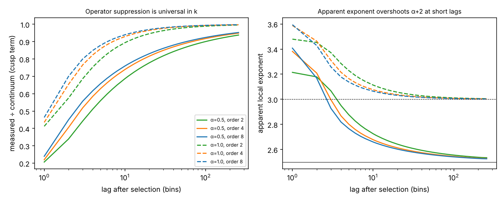
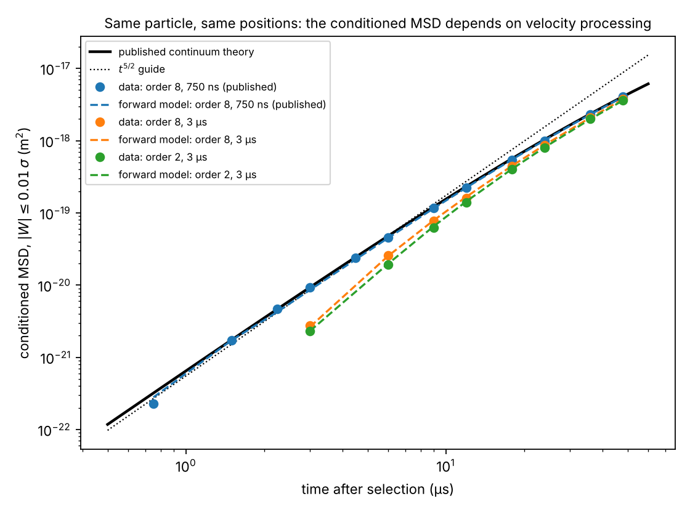
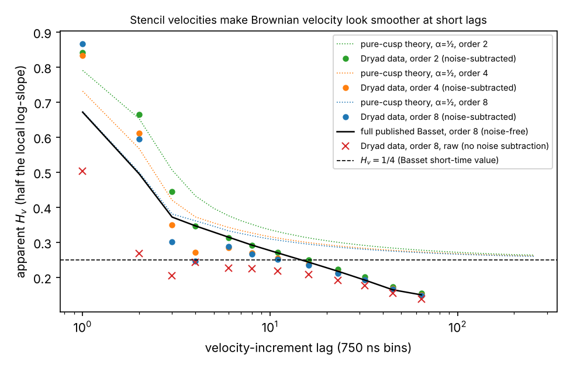
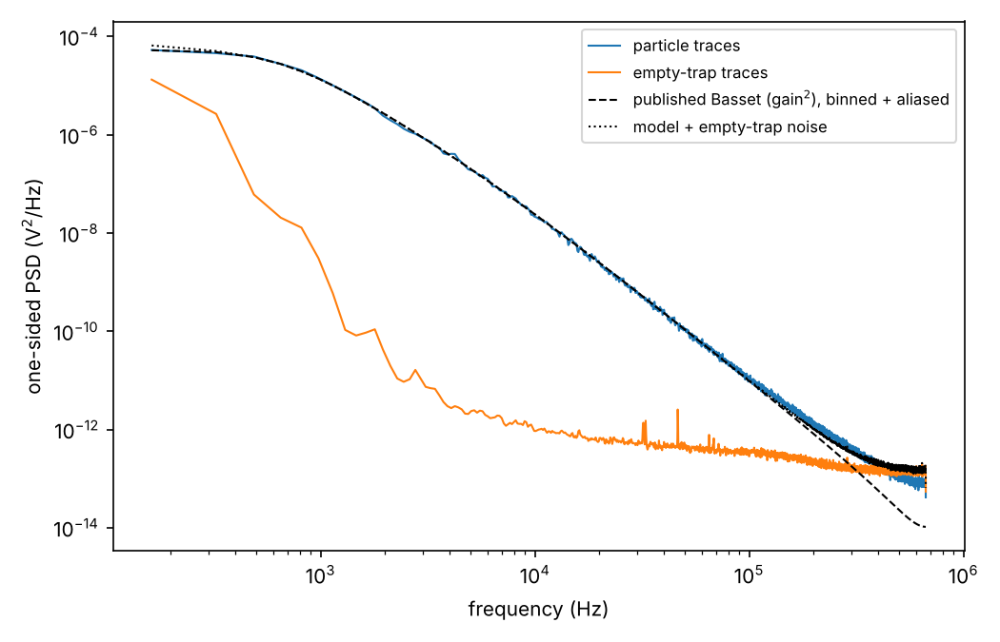

Draft, 8 October 2026
Selecting trajectory segments by their initial velocity is a powerful way to expose short-time dynamics, but in practice the selected velocity is never instantaneous: it is a finite-difference estimate from time-averaged positions. We show that this changes what a velocity-conditioned mean-squared displacement (MSD) measures. For any stationary Gaussian process whose velocity autocorrelation has a short-time cusp, \(C_v(\tau)=c-a|\tau|^{\alpha}\), the measured zero-velocity conditioned MSD separates into three parts. The first is the physical cusp term, distorted by a universal factor that depends only on \(\alpha\), the stencil, and the lag in units of the averaging time. The second is a ballistic contribution leaking back through noise in the velocity estimate, whose size is given by an exact identity. The third is a constant noise floor. The distortion of the apparent exponent decays most slowly for soft cusps, which is precisely the hydrodynamic-memory case \(\alpha=1/2\) in which a \(t^{5/2}\) law has recently been reported. Applying the framework to the public data of that experiment, we find that the published hydrodynamic model is accurate. A calibration-free regression observable agrees with it to within 1.6% from 0.75 to 192 \(\mu\)s. Even so, the conditioned MSD is not a processing-independent quantity. In a preregistered test, recomputing velocity nine ways from the same positions changed the conditioned MSD by up to a factor of four, as a parameter-free forward model predicts (\(\chi^2\)-type statistic 20.9 over 32 cells, versus 4773 for the processing-independent reading). Over the same 3–12 \(\mu\)s window the apparent exponent ranges from 2.29 to 2.96. The same mechanism makes stencil velocities appear smoother at short lags. It turns a passing value \(H_v=1/4\) of the velocity roughness exponent into an apparent plateau when detector noise is not removed. We give a design criterion and remedies.
Brownian motion in a liquid departs from the textbook Langevin picture at short times because the particle drags fluid with it: the Basset–Boussinesq history force gives the velocity autocorrelation a \(t^{1/2}\) cusp and a long-time tail . High-bandwidth optical tracking has resolved the ballistic-to-diffusive transition, hydrodynamic resonances and the instantaneous velocity distribution . A recent experiment went further, selecting moments when the measured velocity is near zero and reporting that the subsequent MSD grows as \(t^{5/2}\), a “super-ballistic” signature of the colored thermal force. Follow-up work discusses velocity-increment scaling with roughness exponent \(H_v=1/4\) (fractal dimension \(7/4\)) .
Both kinds of analysis condition on, or difference, an estimated velocity. In practice positions are averaged over a bin of width \(\Delta\) and velocity is a finite-difference stencil over several bins. The question we address is simple: how much of a velocity-conditioned statistic is the estimator? We derive a general answer, test it on the public data of Ref. with protocols frozen before the confirmatory statistics were computed, and give a criterion for when the physical exponent is observable.
Let \(x(t)\) be stationary and Gaussian with velocity autocorrelation \[C_v(\tau)=c-a|\tau|^{\alpha}+o(|\tau|^\alpha),\qquad 0<\alpha\le 1,\] (\(\alpha=1/2\) for Basset memory, \(\alpha=1\) for ordinary Langevin dynamics). The measured positions are bin averages \(Y_n=\Delta^{-1}\int_{n\Delta}^{(n+1)\Delta}x\,dt\) and the velocity estimate is \(W_n=\Delta^{-1}\sum_l d_l Y_{n+l}\) with a central stencil satisfying \(\sum_l d_l=0\) and \(\sum_l l\,d_l=1\). Selecting \(W\approx 0\) and setting \(D_k=Y_k-Y_0\), Gaussian conditioning gives the measured conditioned MSD \[M_k=u_k-\frac{r_k^2}{s},\quad u_k=\mathrm{Var}\,D_k,\ r_k=\mathrm{Cov}(D_k,W),\ s=\mathrm{Var}\,W .\]
Cusp term. The constant part \(c\) of \(C_v\) is ballistic motion, \(x=v_0t\), for which \(D_k=v_0k\Delta\) and \(W=v_0\) exactly; its contribution to \(M_k\) cancels identically. To first order in \(a\), \(M_k\) is therefore the variance of the residual functional \(L_k=Y_k-Y_0-k\sum_l d_lY_l\), which annihilates constant and linear motion, evaluated with the generalized position covariance \(\gamma(\tau)=a|\tau|^{\alpha+2}/[(\alpha+1)(\alpha+2)]\) (so that \(-\gamma''=-a|\tau|^\alpha\)). After bin averaging and scaling out \(\Delta\), \[M_k^{\rm cusp}=a\,\Delta^{\alpha+2}\,\Phi_\alpha(k),\] with \(\Phi_\alpha\) a universal function of the lag in bins that depends only on \(\alpha\) and the stencil. Its continuum limit \(\Phi_\alpha\to 2k^{\alpha+2}/(\alpha+2)\) reproduces the instantaneous result \(E[D^2|v_0=0]=2at^{\alpha+2}/(\alpha+2)\), i.e. \(\tfrac45 a t^{5/2}\) for \(\alpha=1/2\) .
Ballistic leak. Independent white position noise of variance \(\sigma^2\) adds \(\sigma_W^2=\sigma^2\sum_l d_l^2/\Delta^2\) to \(s\) and, beyond the stencil reach, leaves \(r_k\) unchanged. Exactly, \[\delta M_k=2\sigma^2+\frac{\varepsilon}{1+\varepsilon}\,\frac{r_k^2}{s},\qquad \varepsilon=\frac{\sigma_W^2}{s}.\] Since \(r_k^2/s\approx c\,t_k^2\) at short times, noise in the selection variable leaks a fraction \(\varepsilon/(1+\varepsilon)\) of the ballistic \(t^2\) term back into a quantity that should have cancelled it.
Floor. The term \(2\sigma^2\) is lag-independent.
The measured curve is thus a sum of terms with local exponents above \(\alpha+2\) (the distorted cusp), equal to 2 (the leak) and equal to 0 (the floor).

Figure 1 shows \(\Phi_\alpha\). For \(\alpha=1/2\) and an eighth-order stencil, the measured cusp term is 0.24, 0.62 and 0.82 of its continuum value at \(k=1,4,16\). Its apparent exponent at \(k=1\) is 3.41 rather than 2.5. The exponent is within 0.1 (0.05) of \(\alpha+2\) only for \(k\gtrsim 23\) (71) bins. For \(\alpha=1\) the corresponding values are \(k\gtrsim 7\) (13); for \(\alpha=1/4\) the 0.1 threshold needs \(k\gtrsim82\). Softer cusps, meaning stronger memory, recover most slowly. A clean \(t^{\alpha+2}\) therefore requires all of the following:
\(t\gtrsim k_{\min}\Delta\), the operator condition;
\(\varepsilon c t^2\ll at^{\alpha+2}\), the velocity-noise condition;
\(2\sigma^2\ll at^{\alpha+2}\), the position-noise condition;
\(t\) well below the onset of higher-order dynamics, for Basset memory \(\min(\tau_f,\tau_p)\) with \(\tau_f=\rho_f R^2/\eta\) and \(\tau_p=m/6\pi\eta R\).
To first order in \(a\) the theory agrees with the full Basset forward model (below) to within 1–5% up to about 3 \(\mu\)s at the parameters of Ref. . The leak identity is exact, and holds to machine precision numerically.
The same construction with weights \(d_{l-k}-d_l\) gives \(\mathrm{Var}(W_k-W_0)=a\Delta^\alpha\Psi_\alpha(k)\), with \(\Psi_\alpha\to 2k^\alpha\). The apparent roughness exponent, half the local log-slope of \(\Psi_\alpha\), is biased upward at short lags. For \(\alpha=1/2\) (true \(H_v=1/4\)) with an eighth-order stencil it is 0.67, 0.50, 0.36, 0.31 and 0.29 at \(k=1,2,4,8,16\): stencil velocities look smoother than the physical velocity.
We analyzed the six processed traces of Ref. : an optically trapped BaTiO\(_3\) sphere in acetone (\(R=3.40\,\mu\)m), 750 ns bins, an eighth-order stencil, and six empty-trap noise traces. All seven files matched their published SHA-256 digests. The authors’ notebooks were read as text, not executed. Confirmatory protocols were committed before the corresponding real-data statistics were computed, each with synthetic positive and negative controls. Amendments are dated, and one inadvertent protocol deviation is disclosed (Methods).
The hydrodynamic model is accurate. The regression slope \(R_k=\mathrm{Cov}(D_k,W)/\mathrm{Var}\,W\), after subtracting empty-trap moments, has units of seconds and is independent of the volts-to-meters calibration. In equilibrium it equals the impulse response \(m\chi(t)\) seen through the operator. With the published parameters and no free parameter, the Basset model matches \(R_k\) to within 1.6% from 0.75 to 192 \(\mu\)s. A memoryless Langevin model with free damping and stiffness is rejected (\(\Delta\chi^2=5483\)). Equipartition through the operator reproduces the published calibration to 0.7–1.6%; ignoring the operator gives an 8% discrepancy. The power spectrum agrees with the model to 1–4% from 2 to 100 kHz (Fig. 4).
The conditioned MSD is processing-dependent. Through the published operator, the zero-velocity conditioned MSD of the Basset model is 0.26, 0.49, 0.67, 0.79 and 0.87 of the continuum curve at 0.75, 1.5, 3, 6 and 12 \(\mu\)s. Empty-trap noise contributes an upper estimate of 71, 51, 27, 16 and 9% of the measured value at the same lags. Over 0.75–6 \(\mu\)s the log-log slopes are:
operator alone: 2.93;
operator plus measured noise: 2.42;
data: 2.52;
continuum curve: 2.41.
To test this explanation we recomputed velocity from the supplied positions with stencils of order 2, 4 and 8, on positions coarsened by factors of 1, 2 and 4, giving nine variants. We compared ratios of conditioned MSDs to the published processing at 3, 6, 12 and 24 \(\mu\)s; these ratios do not depend on the calibration. The forward model predicts ratios between 0.25 and 0.98. The processing-independent reading predicts 1. The frozen decision statistic was 20.9 for the forward model and 4773 for the processing-independent reading, over 32 cells. The median absolute log deviation from the forward model was 0.024, and the synthetic self-test returned the same verdict. Over 3–12 \(\mu\)s the apparent exponent ranges from 2.29 to 2.96 with processing alone (Fig. 2). At the published nonzero conditioning speeds the effect changes sign. Coarser processing suppresses the curve at \(v_0=0.5\sigma\) and enhances it at \(2\sigma\), both favoring the forward model, with a predicted crossover near \(1\sigma\).

Velocity roughness. Noise-subtracted increment variances of recomputed stencil velocities follow the full Basset forward model to within 1–6% beyond the fourth lag. In that model the local roughness exponent passes through \(1/4\) near 11 \(\mu\)s on its way down to the trap-dominated regime, and never plateaus. Without noise subtraction the data show an apparent plateau, \(H_v\approx0.21\)–0.25 over 1.5–12 \(\mu\)s (Fig. 3), produced by detector noise flattening a falling curve. We could not read the velocity-roughness preprints and do not know their estimator. We therefore state only that a plateau near \(1/4\) in stencil-velocity increments is not, by itself, evidence of a scaling regime.

Noise is not particle-independent. Above 400 kHz the particle traces are quieter than the empty-trap traces (Fig. 4), so the noise floor with a particle present is roughly 0.5–0.7 of the empty-trap floor. Between 100 and 400 kHz the particle spectrum exceeds model plus noise by about 23%. This is the spectral counterpart of a 1–2% structured residual in \(R_k\) at 2–12 \(\mu\)s. We could not resolve that residual with a free memory exponent, a detector low-pass, single- or two-component noise rescaling, or per-trace fits.

Nothing here contradicts the hydrodynamics of Refs. . The model is accurate. What changes is the evidential status of a plotted curve: a velocity-conditioned MSD built from estimated velocities is a property of the physics and of the estimator. At the published settings its agreement with the continuum \(t^{5/2}\) curve reflects two large effects that nearly cancel. The physical super-ballistic law is still recoverable, but only through a forward model or an estimator-independent observable such as \(R_k\). Practical remedies are:
model the operator and the noise explicitly;
report processing variants;
sample fast enough that \(k_{\min}\Delta\ll\min(\tau_f,\tau_p)\); for this experiment \(k_{\min}\Delta\approx17\,\mu\)s while \(\tau_f\approx28\,\mu\)s, leaving essentially no clean window;
select on an independent velocity measurement, for example Doppler velocimetry, rather than on differences of the same positions.
The decomposition applies to any velocity-selected statistic, for instance in single-particle tracking and molecular dynamics.
Limitations. The analysis covers one particle and one dataset, and the authors’ upstream high-pass inversion was not varied. The theory is first order in \(a\) and assumes stationary Gaussian statistics with white position noise; Fig. 4 shows the real noise is neither white nor particle-independent. A limited literature search found no prior treatment of this estimator effect, but we do not claim priority.
All code, frozen protocols, results and digests are public in the
repository github.com/lukegranto23/physics-worldmap: labs
34–47 under Physics Worldmap/62 Computational Labs, with
write-ups as Benchmarks 014–018. Data are from Ref. (CC0) and are not
redistributed. One disclosed protocol deviation concerns the
calibration-free test: before its run, a rough first-lag value of \(R/\Delta\) was computed while estimating
noise levels from earlier saved results. No decision rule was
changed.
We thank J. Boynewicz, M. C. Thumann and M. G. Raizen for making their processed data and analysis notebooks public. The analysis and code were developed with assistance from an AI system (Claude, Anthropic); the author takes responsibility for the content.
99 E. H. Hauge and A. Martin-Löf, J. Stat. Phys. 7, 259 (1973). E. J. Hinch, J. Fluid Mech. 72, 499 (1975). H. J. H. Clercx and P. P. J. M. Schram, Phys. Rev. A 46, 1942 (1992). R. Huang et al., Nat. Phys. 7, 576 (2011). T. Franosch et al., Nature 478, 85 (2011). S. Kheifets, A. Simha, K. Melin, T. Li, and M. G. Raizen, Science 343, 1493 (2014). J. Boynewicz, M. C. Thumann, and M. G. Raizen, Sci. Adv. 12, eaeb4579 (2026). J. Boynewicz, M. C. Thumann, and M. G. Raizen, Dryad dataset, doi:10.5061/dryad.pvmcvdnz4 (2026). “The fractal dimension of Brownian dynamics in liquids,” arXiv:2605.16252 (2026). “Brownian motion: non-equilibrium states from equilibrium trajectories,” arXiv:2605.16247 (2026).